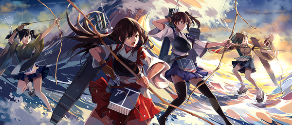

What
《舰队Collection》是将第二次世界大战前后的海军（以旧日本海军为主）的驱逐舰、轻巡洋舰、重巡洋舰等拟人化成「舰娘」，将她们编组、育成、强化、结婚，目标是成为无敌联合舰队的一款模拟收集游戏。游戏有可以养成自己喜欢舰娘的育成要素，或是收集拥有 100 个以上舰娘的收集要素，与其他玩家一起演习，还有将主炮鱼雷等武装改造等等的多彩玩法。
When
最初公开时公布登场的舰娘数是100艘左右，之后陆续有新的舰娘以及舰娘的新改造不停实装。截止2014年2月所登场的舰娘大部分是以二战期间IJN（旧日本海军）所拥有的舰船为原型。此外2013年12月24日的版本更新开始，少量旧日本陆军所拥有的船也开始登场（秋津丸、まるゆ）。官方没有明确指定哪一艘舰娘才是主角，各种周边同人等也各自有各自的主角舰娘。
How
需要通过建造来获得新的舰娘，或者通过击败敌方舰队来获取掉落舰娘。获得的舰娘可以通过击败敌方舰队来进行升级，还可以通过将其他舰娘作为材料合成来强化基础数据，装备更强力的武装来强化自身等方式进行养成，从而壮大提督自己的舰队。
伊13--------40%
伊14--------30%
伊26--------30%